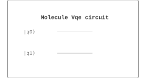

Chemistry / 化学 | 难度：高级 | 预计时间：25 分钟
分子 VQE 用于计算分子的基态能量。
经典方法（如 CCSD(T)）对大分子计算成本极高
精确对角化需要指数级内存
密度泛函理论（DFT）对强关联体系不准确
分子 VQE 使用量子计算机制备试探态
经典优化器调整参数最小化能量
对噪声有鲁棒性，适合近期量子设备
量子化学（分子基态能量计算）
药物设计（药物分子设计）
材料科学（催化剂设计）
from quonic.chemistry import molecule_vqe
# 计算 H2 分子的基态能量
result = molecule_vqe(molecule='H2', bond_length=0.74)
print(f'Energy: {result.energy} Ha')
print(f'Error: {result.error} Ha')预期输出：
Energy: -1.137270 Ha
Error: 0.001 Ha
Step 1: 分子哈密顿量
分子哈密顿量： \[\begin{equation} H = \sum_{ij} h_{ij} a_i^\dagger a_j + \sum_{ijkl} h_{ijkl} a_i^\dagger a_j^\dagger a_k a_l \end{equation}\]
Step 2: Jordan-Wigner 变换
使用 Jordan-Wigner 变换映射到量子比特： \[\begin{equation} H = \sum_i h_i Z_i + \sum_{ij} h_{ij} Z_i Z_j + \sum_{ij} h_{ij} X_i X_j + \cdots \end{equation}\]
Step 3: 变分原理
变分原理： \[\begin{equation} E_0 \leq \langle\psi(\theta)|H|\psi(\theta)\rangle \end{equation}\]
Step 4: UCCSD ansatz
UCCSD ansatz： \[\begin{equation} |\psi(\theta)\rangle = e^{T(\theta) - T^\dagger(\theta)}|\psi_0\rangle \end{equation}\]
其中 \(T(\theta)\) 是耦合簇算符。
Step 5: 优化
使用经典优化器最小化能量： \[\begin{equation} \theta^* = \arg\min_\theta \langle\psi(\theta)|H|\psi(\theta)\rangle \end{equation}\]
分子 VQE 在参数空间中寻找能量最小值。量子计算机负责制备态和测量，经典优化器负责更新参数。
from quonic.chemistry import molecule_vqe
# molecule_vqe(molecule, bond_length, ansatz, optimizer)
# molecule: 分子式
# bond_length: 键长（埃）
# ansatz: 参数化电路 ('uccsd', 'hardware_efficient')
# optimizer: 优化器 ('cobyla', 'l-bfgs-b', 'spsa')
result = molecule_vqe(
molecule='H2',
bond_length=0.74,
ansatz='uccsd',
optimizer='cobyla'
)
# result.energy: 基态能量
# result.error: 误差
# result.params: 优化后的参数
# result.history: 优化历史
print(f'Energy: {result.energy} Ha')
print(f'Error: {result.error} Ha')计算分子在不同键长下的能量：
from quonic.chemistry import molecule_vqe
import matplotlib.pyplot as plt
import numpy as np
# H2 分子的势能面
bond_lengths = np.linspace(0.5, 2.0, 20)
energies = []
for r in bond_lengths:
result = molecule_vqe(molecule='H2', bond_length=r, ansatz='uccsd')
energies.append(result.energy)
print(f'r={r:.2f} A: E={result.energy:.6f} Ha')
# 绘制势能面
plt.figure(figsize=(10, 6))
plt.plot(bond_lengths, energies, 'o-')
plt.xlabel('Bond Length (Angstrom)')
plt.ylabel('Energy (Hartree)')
plt.title('H2 Molecular Potential Energy Surface')
plt.grid(True)
plt.savefig('h2_pes.png')
# 分析：
# - 平衡键长：约 0.74 Angstrom
# - 解离极限：约 -1.0 Ha（两个独立的 H 原子）
# - 势能阱深度：约 0.14 Ha计算分子的激发态能量：
from quonic.chemistry import molecule_vqe
import numpy as np
# H2 分子的基态和激发态
mol = molecule_vqe(molecule='H2', bond_length=0.74)
# 基态能量
E0 = mol.energy
print(f'Ground state energy: {E0:.6f} Ha')
# 激发态计算（使用 VQD - Variational Quantum Deflation）
# VQD 通过添加惩罚项来激发态
from quonic.algorithms import vqd
# 第一激发态
result_vqd = vqd(
molecule='H2',
bond_length=0.74,
n_states=2,
penalty=10.0
)
E1 = result_vqd.energies[1]
print(f'First excited state energy: {E1:.6f} Ha')
print(f'Excitation energy: {E1 - E0:.6f} Ha')
# 分析：
# - 基态：X^1Sigma_g^+（单重态）
# - 第一激发态：b^3Sigma_u^+（三重态）
# - 激发能约为 0.5 Ha分析噪声对 VQE 精度的影响：
from quonic.chemistry import molecule_vqe
from quonic.noise import noise_model
import matplotlib.pyplot as plt
# 不同噪声水平下的 VQE
noise_levels = [0.0, 0.001, 0.01, 0.05, 0.1]
energies = []
errors = []
for noise_rate in noise_levels:
noise = noise_model(error_rate=noise_rate, noise_type='depolarizing')
result = molecule_vqe(
molecule='H2',
bond_length=0.74,
ansatz='uccsd',
noise_model=noise
)
energies.append(result.energy)
errors.append(result.error)
print(f'Noise={noise_rate}: E={result.energy:.6f}, Error={result.error:.6f}')
# 绘制噪声影响
plt.figure(figsize=(10, 6))
plt.errorbar(noise_levels, energies, yerr=errors, fmt='o-')
plt.axhline(y=-1.137270, color='r', linestyle='--', label='Exact')
plt.xlabel('Noise Rate')
plt.ylabel('Energy (Hartree)')
plt.title('VQE Accuracy vs Noise Level')
plt.legend()
plt.grid(True)
plt.savefig('vqe_noise.png')
# 分析：
# - 低噪声：VQE 接近精确值
# - 高噪声：VQE 误差增大
# - 可以使用 ZNE 等技术缓解噪声分子 VQE 是量子化学的核心算法。
分子 VQE 可以用于设计新药物。
分子 VQE 可以用于设计新材料。
UCCSD ansatz 通常能达到化学精度（1 kcal/mol）。
取决于分子的大小。H2 需要 4 个量子比特。
分子 VQE 使用量子计算机制备试探态，经典方法使用经典计算机。
VQE
量子化学
UCCSD ansatz
药物设计
材料科学
量子化学
from quonic.chemistry import molecule_vqe
result = molecule_vqe(molecule='H2', bond_length=0.74)
print(f'Energy: {result.energy} Ha')(https://github.com/ChrisLee0721/QuoNic/blob/main/examples/molecule_vqe/molecule_vqe.py)